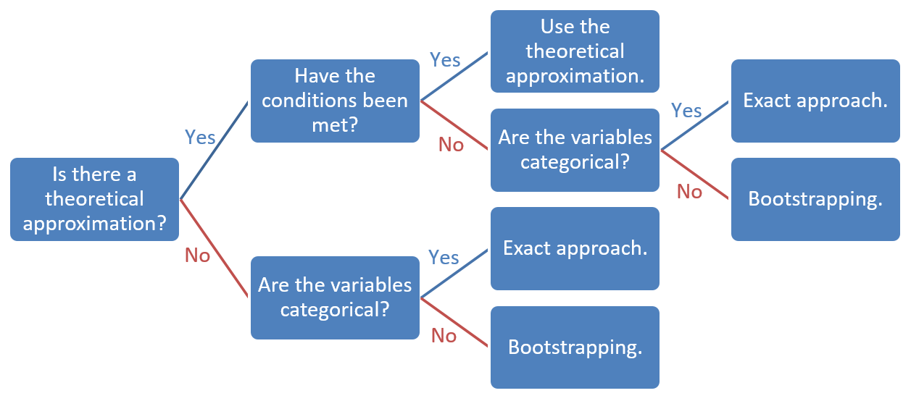

2 Probability Models
How Do I Get a Sampling Distribution?
Key concepts: bootstrapping/bootstrap sample, sampling with replacement, exact approach, approximation with a theoretical probability distribution, binomial distribution, (standard) normal distribution, (Student) t distribution, F distribution, chi-squared distribution, condition checks for theoretical probability distributions, sample size, equal population variances, independent samples, dependent/paired samples.
Watch this micro lecture on probability models for an overview of the chapter.
Summary
How do we get a sampling distribution without drawing many samples ourselves?
In the previous chapter, we drew a large number of samples from a population to obtain the sampling distribution of a sample statistic, for instance, the proportion of yellow candies or average candy weight in the sample. The procedure is quite simple: Draw a sample, calculate the desired sample statistic, add the sample statistic value to the sampling distribution, and repeat this thousands of times.
Although this procedure is simple, it is not practical. In a research project, we would have to draw thousands of samples and administer a survey to each sample or collect data on the sample in some other way. This requires too much time and money to be of any practical value. So how do we create a sampling distribution, if we only collect data for a single sample? This chapter presents three ways of doing this: bootstrapping, exact approaches, and theoretical approximations.
After studying this chapter, you should know the limitations of the three methods of creating a sampling distribution, when to use which method, and how to check the conditions for using a method.
2.1 Exact Approaches to the Sampling Distribution
The first approach we will discuss to constructing a sampling distribution has implicitly been demonstrated in the section on probability distributions (Section 1.2.3). In this section, we calculated the true sampling distribution of the proportion of yellow candies in a sample from the probabilities of the colours. If we know or think we know the proportion of yellow candies in the population, we can exactly calculate the probability that a sample of ten candies includes one, two, three, or ten yellow candies. See the section on discrete random variables for details (Section 1.2).
| Outcome | Combination | Probability: Combination | Probability: Outcome |
|---|---|---|---|
| 0 | tail-tail-tail | 1/2 * 1/2 * 1/2 = 1/8 = .125 | 1/8 = .125 |
| 1 | tail-tail-head | 1/2 * 1/2 * 1/2 = 1/8 = .125 | |
| 1 | head-tail-tail | 1/2 * 1/2 * 1/2 = 1/8 = .125 | |
| 1 | tail-head-tail | 1/2 * 1/2 * 1/2 = 1/8 = .125 | 3/8 = .375 |
| 2 | head-head-tail | 1/2 * 1/2 * 1/2 = 1/8 = .125 | |
| 2 | head-tail-head | 1/2 * 1/2 * 1/2 = 1/8 = .125 | |
| 2 | tail-head-head | 1/2 * 1/2 * 1/2 = 1/8 = .125 | 3/8 = .375 |
| 3 | head-head-head | 1/2 * 1/2 * 1/2 = 1/8 = .125 | 1/8 = .125 |
| Total | 8 | 1.000 |
How does an exact aproach to the sampling distribution work?
The calculated probabilities of all possible sample statistic outcomes give us an exact approach to the sampling distribution. Note that I use the word approach instead of approximation here because the obtained sampling distribution is no longer an approximation, that is, more or less similar to the true sampling distribution. No, it is the true sampling distribution itself.
2.1.1 Exact approaches for categorical data
An exact approach lists and counts all possible combinations. This can only be done if we work with discrete or categorical variables. For an unlimited number of categories (continues variables), we cannot list all possible combinations.
A proportion is based on frequencies and frequencies are discrete (integer values), so we can use an exact approach to create a sampling distribution for one proportion such as the proportion of yellow candies in the example above. The exact approach uses the binomial probability formula to calculate probabilities. Consult the internet if you want to know this formula; we are not going to use it in this course.
Exact approaches are also available for the association between two categorical (nominal or ordinal) variables in a contingency table: Do some combinations of values for the two variables occur relatively frequently? For example, are yellow candies more often sticky than red candies? If candies are either sticky or not sticky and they have one out of a limited set of colours, we have two categorical variables. We can create an exact probability distribution for the combination of colour and stickiness. The Fisher-exact test is an example of an exact approach to the sampling distribution of the association between two categorical variables.
2.1.2 Computer-intensive
The exact approach can be applied to discrete variables because they have a limited number of values. Discrete variables are usually measured at the nominal or ordinal level. If the number of categories becomes large, a lot of computing time can be needed to calculate the probabilities of all possible sample statistic outcomes. Exact approaches are said to be computer-intensive.
It is usually wise to set a limit to the time you allow your computer to work on an exact sampling distribution because otherwise the problem may keep your computer occupied for hours or days. In this course, we will set the time limit in SPSS on 5 minutes (?sec-Exact Approaches in SPSS.
2.2 Exact Approaches in SPSS
2.2.1 Introduction
To perform an exact approach in SPSS, let us set an example for a research. In a preceding paragraph we suggested the question are yellow candies more often sticky than red candies? If we want to investigate this, we have two variables. The first variable is candy colour (yellow versus red) and the second variable is stickiness (sticky versus not sticky). Thus, these two variables are both categorical (with two categories).
We can create an exact probability distribution for the combination of colour and stickiness.
If SPSS offers an exact approach of the sampling distribution, the test dialog window contains an Exact button. You will find this in the dialog window for contingenxy table (Analyze > descriptive statistics > crosstabs) and in several legacy dialogs for non-parametric tests (Analyze > nonparametric tests > legacy diologs). In the Exact dialog, you check the Exact option and SPSS automatically sets an upper limit of five minutes to the execution of the command. You can leave this at five minutes.
As established, we have two categorical variables with two groups. Looking at the test selection table, we know that we use a Chi Square test to investigate these variables. Thus, within the dialog window contingency tables we select Chi-sqaure in the Statistics dialog and the option Exact in the Exact dialog.
Note a Fisher’s exact test is automatically run when there is a 2x2 contingency table, when we perform this test on larger contingency tables we need to select the Exact option, which is why we teach it to you here.
2.2.2 Instructions
2.3 Theoretical Approximations of the Sampling Distribution
Because bootstrapping and exact approaches to the sampling distribution require quite a lot of computing power, these methods were not practical in the not so very distant pre-computer age. In those days, mathematicians and statisticians discovered that many sampling distributions look a lot like known mathematical functions. For example, the sampling distribution of the sample mean can be quite similar to the well-known bell-shape of the normal distribution or the closely related (Student) t distribution. The mathematical functions are called theoretical probability distributions. Most statistical tests use a theoretical probability distribution as approximation of the sampling distribution.
The normal distribution is a mathematical function linking continuous scores, e.g., a sample statistic such as the average weight in the sample, to right-hand and left-hand probabilities, that is, to the probability of finding at least, or at most, this score. Such a function is called a probability density function (Section 1.3).
We like to use a theoretical probability distribution as an approximation of the sampling distribution because it is convenient. A computer can calculate probabilities from the mathematical function very quickly. We also like theoretical probability distributions because they usually offer plausible arguments about chance and probabilities.
2.3.1 Reasons for a bell-shaped probability distribution
The bell shape of the normal distribution makes sense. Our sample of candies is just as likely to be too heavy, as it is too light, so the sampling distribution of the sample mean should be symmetrical. A normal distribution is symmetrical.
In addition, it is more likely that our sample bag has an average weight that is near the true average candy weight in the population than an average weight that is much larger or much smaller than the true average. Bags with on average extremely heavy or extremely light candies may occur, but they are extremely rare (we are very lucky or very unlucky). From these intuitions we would expect a bell shape for the sampling distribution.
From this argumentation, we conclude that the normal distribution is a reasonable model for the probability distribution of sample means. Actually, it has been proven that the normal distribution exactly represents the sampling distribution in particular cases, for instance the sampling distribution of the mean of a very large sample.
2.3.2 Conditions for the use of theoretical probability distributions
Theoretical probability distributions, then, are plausible models for sampling distributions. They are known or likely to have the same shape as the true sampling distributions under particular circumstances or conditions.
If we use a theoretical probability distribution, we must assume that the conditions for its use are met. We have to check the conditions and decide whether they are close enough to the ideal conditions. Close enough is of course a matter of judgement. In practice, rules of thumb have been developed to decide if the theoretical probability distribution can be used.
Figure ?fig-normal-approx-proportion shows an example in which the normal distribution is a good approximation for the sampling distribution of a proportion in some situations, but not in all situations.
Do theoretical probability distributions fit the true sampling distribution? As you may have noticed while playing with Figure ?fig-normal-approx-proportion, this is not always the case. In general, theoretical probability distributions fit sampling distributions better if the sample is larger. In addition, the population value may be relevant to the fit of the theoretical probability distribution. The sampling distribution of a sample proportion is more symmetrical, like the normal distribution, if the proportion in the population is closer to .5.
This illustrates that we often have several conditions for a theoretical probability distribution to fit the sampling distribution. We should evaluate all of them at the same time. In the example of proportions, a large sample is less important if the true proportion is closer to .5 but it is more important for true proportions that are more distant from .5.
The rule of thumb for using the normal distribution as the sampling distribution of a sample proportion combines the two aspects by multiplying them and requiring the resulting product to be larger than five. If the probability of drawing a yellow candy is .2 and our sample size is 30, the product is .2 * 30 = 6, which is larger than five. So we may use the normal distribution as approximation of the sampling distribution.
Note that this rule of thumb uses one minus the probability, if the probability is larger than .5. In other words, it uses the smaller of two probabilities: the probability that an observation has the characteristic and the probability that it has not. For example, if we want to test the probability of drawing a candy that is not yellow, the probability is .8 and we use 1 - 0.8 = 0.2, which is then multiplied by the sample size.
Apart from the normal distribution, there are several other theoretical probability distributions. We have the binomial distribution for a proportion, the t distribution for one or two sample means, regression coefficients, and correlation coefficients, the F distribution for comparison of variances and comparing means for three or more groups (analysis of variance, ANOVA), and the chi-squared distribution for frequency tables and contingency tables.
For most of these theoretical probability distributions, sample size is important. The larger the sample, the better. There are additional conditions that must be satisfied such as the distribution of the variable in the population. The rules of thumb are summarized in ?tbl-thumb. Bootstrapping and exact tests can be used if conditions for theoretical probability distributions have not been met. Special conditions apply to regression analysis (see Chapter 6, Section 6.1.4).
?tbl-thumb shows the conditions that must be satisfied if we want to use a theoretical probability distribution to approximate a sampling distribution. Only if the conditions are met, the theoretical probability distribution resembles the sampling distribution sufficiently.
In ?tbl-thumb the minimal required sample sizes for using theoretical approximation of sampling distributions are presented. If you plan to do a t test, each group should contain more than thirty cases. So if you intend to apply t tests, recruit more than thirty participants for each experimental group or more than thirty respondents for each group in your survey. If you expect non-response, that is, sampled participants or respondents unwilling to participate in your research, you should recruit more participants or respondents to have more than thirty observations in the end.
Chi-squared tests require a minimum of five expected frequencies per category in a frequency distribution or cell in a contingency table. Your sample size should be at least the number of categories or cells times five to come even near this requirement. Regression analysis requires at least 20 cases per independent variable in the regression model.
The variation of sample size across groups is important in analysis of variance (ANOVA), which uses the F distribution. If the number of cases is more or less the same across all groups, we do not have to worry about the variances of the dependent variable for the groups in the population. To be on the safe side, then, it is recommended to design your sampling strategy in such a way that you end up with more or less equal group sizes if you plan to use analysis of variance.
2.3.3 Checking conditions
Rules of thumb about sample size are easy to check once we have collected our sample. By contrast, rules of thumb that concern the scores in the population cannot be easily checked, because we do not have information on the population. If we already know what we want to know about the population, why would we draw a sample and do the research in the first place?
We can only use the data in our sample to make an educated guess about the distribution of a variable in the population. For example, if the scores in our sample are clearly normally distributed, it is plausible that the scores in the population are normally distributed.
In this situation, we do not know that the population distribution is normal but we assume it is. If the sample distribution is clearly not normally distributed, we had better not assume that the population is normally distributed. In short, we sometimes have to make assumptions when we decide on using a theoretical probability distribution.
We could use a histogram of the scores in our sample with a normal distribution curve added to evaluate whether a normal distribution applies. Sometimes, we have statistical tests to draw inferences about the population from a sample that we can use to check the conditions. We discuss these tests in a later chapter.
2.3.4 More complicated sample statistics: differences
Up to this point, we have focused on rather simple sample statistics such as the proportion of yellow candies or the average weight of candies in a sample. ?tbl-thumb, however, contains more complicated sample statistics.
If we compare two groups, for instance, the average weight of yellow and red candies, the sample statistic for which we want to have a sampling distribution must take into account both the average weight of yellow candies and the average weight of red candies. The sample statistic that we are interested in is the difference between the averages of the two samples.
If we draw a sample from both the red and yellow candies in the population, we may calculate the means for both samples and the difference between the two means. For example, the average weight of red candies in the sample bag is 2.76 grams and the average for yellow candies is 2.82 grams. For this pair of samples, the statistic of interest is 2.76 - 2.82 = -0.06, that is, the difference in average weight. If we repeat this many, many times and collect all differences between means in a distribution, we obtain the sampling distribution that we need.
The sampling distribution of the difference between two means is similar to a t-distribution, so we may use the latter to approximate the former. Of course, the conditions for using the t-distribution must be met.
It is important to note that we do not create separate sampling distributions for the average weight of yellow candies and for the average weight of red candies and then look at the difference between the two sampling distributions. Instead, we create one sampling distribution for the statistic of interest, namely the difference between means. We cannot combine different sampling distributions into a new sampling distribution. We will see the importance of this when we discuss mediation (Chapter 9).
2.3.5 Independent samples
If we compare two means, there are two fundamentally different situations that are sometimes difficult to distinguish. When comparing the average weight of yellow candies to the average weight of red candies, we are comparing two samples that are statistically independent (see Figure ?fig-mean-independent), which means that we could have drawn the samples separately.
In principle, we could distinguish between a population of yellow candies and a population of red candies, and sample yellow candies from the first population and separately sample red candies from the other population. Whether we sampled the colours separately or not does not matter. The fact that we could have done so implies that the sample of red candies is not affected by the sample of yellow candies or the other way around. The samples are statistically independent.
This is important for the way in which probabilities are calculated. Just think of the simple example of flipping two coins. The probability of having heads twice in a row is .5 times .5, that is .25, if the coins are fair and the result of the second coin does not depend on the result of the first coin. The second flip is not affected by the first flip.
Imagine that a magnetic field is activated if the first coin lands with heads up and that this magnetic field increases the odds that the second coin will also be heads. Now, the second toss is not independent of the first toss and the probability of getting heads twice is larger than .25.
2.3.6 Dependent samples
The example of a manipulated second toss is applicable to repeated measurements. If we want to know how quickly the yellow colour fades when yellow candies are exposed to sun light, we may draw a sample of yellow candies once and measure the colourfulness of each candy at least twice: at the start and end of some time interval. We compare the colourfulness of a candy at the second measurement to its colourfulness at the first measurement.
In this example, we are comparing two means, just like the yellow versus red candy weight example, but now the samples for both measurements are the same. It is impossible to draw the sample for the second measurement independently from the sample for the first measurement if we want to compare repeated measurements. Here, the second sample is fixed once we have drawn the first sample. The samples are statistically dependent; they are paired samples.
With dependent samples, probabilities have to be calculated in a different way, so we need a special sampling distribution. In the interactive content above, you may have noticed a relatively simple solution for two repeated measurements. We just calculate the difference between the two measurements for each candy in the sample and use the mean of this new difference variable as the sample statistic that we are interested in. The t-distribution, again, offers a good approximation of the sampling distribution of dependent samples if the samples are not too small.
For other applications, the actual sampling distributions can become quite complicated but we do not have to worry about that. If we choose the right technique, our statistical software will take care of this.
2.4 SPSS and Theoretical Approximation of the Sampling Distribution
By default, SPSS uses a theoretical probability distribution to approximate the sampling distribution. It chooses the correct theoretical distribution but you yourself should check if the conditions for using this distribution are met. For example, is the sample large enough or is it plausible that the variable is normally distributed in the population?
In one case, SPSS automatically selects an exact approach if the conditions for a theoretical approximation are not met. If you apply a chi-squared test to a contingency table in SPSS, SPSS will automatically apply Fisher’s exact test if the table has two rows and two columns. In all other cases, you have to select bootstrapping or an exact approach yourself if the conditions for a theoretical approximation are not met.
We are not going to practice with theoretical approximations in SPSS, now. Because theoretical approximation is the default approach in SPSS, we will encounter it in the exercises in later chapters.
2.5 The Bootstrap Approximation of the Sampling Distribution
The first way to obtain a sampling distribution is still based on the idea of drawing a large number of samples. However, we only draw one sample from the population for which we collect data. As a next step, we draw a large number of samples from our initial sample. The samples drawn in the second step are called bootstrap samples. The technique was developed by Bradley Efron (1979; 1987). For each bootstrap sample, we calculate the sample statistic of interest and we collect these as our sampling distribution. We usually want about 5,000 bootstrap samples for our sampling distribution.
In Figure ?fig-bootstrapping, an initial sample (left panel) has been drawn from a population containing five candy colours in equal proportions.
The bootstrap concept refers to the story in which Baron von Münchhausen saves himself by pulling himself and his horse by his bootstraps (or hair) out of a swamp. In a similar miraculous way, bootstrap samples resemble the sampling distribution even though they are drawn from a sample instead of the population. This miracle requires some explanation and it does not work always, as we will discuss in the remainder of this section.
Picture: Baron von Münchhausen pulls himself and his horse out of a swamp. Theodor Hosemann (1807-1875), public domain, via Wikimedia Commons{kind=link}
2.5.1 Sampling with and without replacement
As we will see in Chapter 3, for example Section 3.3, the size of a sample is very important to the shape of the sampling distribution. The sampling distribution of samples with twenty-five cases can be very different from the sampling distribution of samples with fifty cases. To construct a sampling distribution from bootstrap samples, the bootstrap samples must be exactly as large as the original sample.
How can we draw many different bootstrap samples from the original sample if each bootstrap sample must contain the same number of cases as the original sample?
If we allow every case in the original sample to be sampled only once, each bootstrap sample contains all cases of the original sample, so it is an exact copy of the original sample. Thus, we cannot create different bootstrap samples.
By the way, we often use the type of sampling described above, which is called sampling without replacement. If a person is (randomly) chosen for our sample, we do not put this person back into the population so she or he can be chosen again. We want our respondents to fill out our questionnaire only once or participate in our experiment only once.
If we do allow the same person to be chosen more than once, we sample with replacement. The same person can occur more than once in a sample. Bootstrap samples are sampled with replacement from the original sample, so one bootstrap sample may differ from another. Some cases in the original sample may not be sampled for a bootstrap sample while other cases are sampled several times. You probably have noticed this in Figure ?fig-replacement. Sampling with replacement allows us to obtain different bootstrap samples from the original sample, and still have bootstrap samples of the same size as the original sample.
In conclusion, we sample bootstrap samples in a different way (with replacement) than participants for our research (without replacement).
2.5.2 Limitations to bootstrapping
Does the bootstrapped sampling distribution always reflect the true sampling distribution?
We can create a sampling distribution by sampling from our original sample with replacement. It is hardly a miracle that we obtain different samples with different sample statistics if we sample with replacement. Much more miraculous, however, is that this bootstrap distribution resembles the true sampling distribution that we would get if we draw lots of samples directly from the population.
Does this miracle always happen? No. The original sample that we have drawn from the population must be more or less representative of the population. The variables of interest in the sample should be distributed more or less the same as in the population. If this is not the case, the sampling distribution may give a distorted view of the true sampling distribution. This is the main limitation to the bootstrap approach to sampling distributions.
A sample is more likely to be representative of the population if the sample is drawn in a truly random fashion and if the sample is large. But we can never be sure. There always is a chance that we have drawn a sample that does not reflect the population well.
2.5.3 Any sample statistic can be bootstrapped
The big advantage of the bootstrap approach (bootstrapping) is that we can get a sampling distribution for any sample statistic that we are interested in. Every statistic that we can calculate for our original sample can also be calculated for each bootstrap sample. The sampling distribution is just the collection of the sample statistics calculated for all bootstrap samples.
Bootstrapping is more or less the only way to get a sampling distribution for the sample median, for example, the median weight of candies in a sample bag. We may create sampling distributions for the wildest and weirdest sample statistics, for instance the difference between sample mean and sample median squared. I would not know why you would be interested in the squared difference of sample mean and median, but there are very interesting statistics that we can only get at through bootstrapping. A case in point is the strength of an indirect effect in a mediation model (Chapter 9).
2.6 Bootstrapping in SPSS
2.6.1 Instructions
In principle, any sample statistic can be bootstrapped. SPSS, however, does not bootstrap sample statistics that we had better not use because they give bad (biased) results. For example, SPSS does not bootstrap the minimum value, maximum value or the range between minimum and maximum value of a variable.
SPSS reports bootstrapping results as confidence intervals. We will discuss confidence intervals in detail in the next chapter.
2.7 When Do We Use Which Approach to the Sampling Distribution?

By default, SPSS uses a theoretical approximation of the sampling distribution. Select the right test in SPSS and SPSS ensures that an appropriate theoretical probability distribution is used. You, however, must check whether the sample meets the conditions for using this theoretical probability distribution, see ?tbl-thumb.
If the conditions for using a theoretical probability distribution are not met or if we do not have a theoretical approximation to the sampling distribution, we use bootstrapping or an exact approach. We can always use bootstrapping but an exact approach is available only if the variables are categorical. An exact approach is more accurate than bootstrapping and approximation with a theoretical probability distribution, for example, the chi-squared distribution, so we prefer the exact approach over bootstrapping if we are dealing with categorical variables.
2.8 Take-Home Points
We may create an exact sampling distribution or simulate a bootstrap sampling distribution in simple situations or if we have a lot of computing power.
For a bootstrap sampling distribution, we need about 5,000 bootstrap samples from our original sample.
An exact sampling distribution can only be used with categorical variables.
We can often approximate the sampling distribution of a sample statistic with a known theoretical probability distribution.
Approximations only work well under conditions, which we have to check.
Conditions usually involve the size of the sample, sample type (independent vs. dependent/paired), and the shape or variance of the population distribution.
If these conditions are not met or we do not have a theoretical approximation to the sampling distribution, we use bootstrapping or exact tests.
Samples are independent if, in principle, we can draw a sample for one group without taking into account the sample for another group of cases. Otherwise, the samples are dependent or paired.